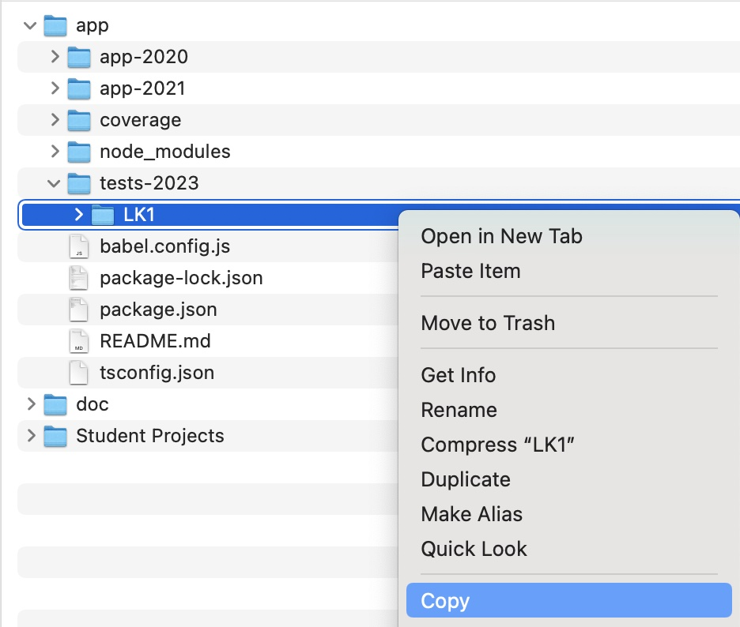
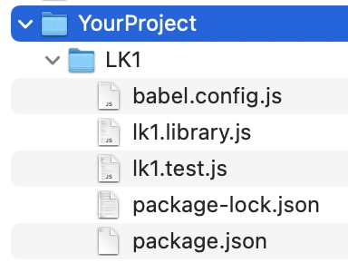
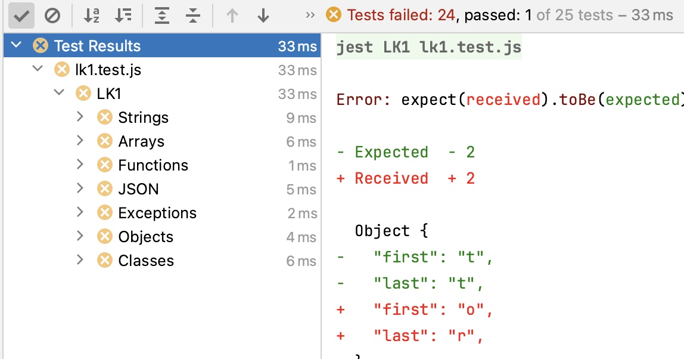

JavaScript
Lektion 8
LK2; JSX & React
Rückblick
- Sicherheit
- Browser-Objekte
- Persistenz
- Animationen
- Media
Übersicht Lektionen
- Einführung & IDE Aufsetzen
- Grundlagen: Typen, Operatoren, Statements, Funktionen I
- Grundlagen: Funktionen II, Klassen, Modulen
- Externe Abfrage: JSON & Fetch; Refactoring
- LK1; DOM & Ereignisse
- Formulare, Eingaben, Validierung, & Web Komponenten
- Browser-Objekte, Persistenz, Animationen, Media
- LK2; JSX & React
- MLZ Präsentationen; React, Builders & TypeScript
LZ2
- Mein "App" Repo aktualisieren (fetch)
- Branch
feature/lk2auschecken (checkout) - Verzeichnis
LK2aus/tests-2023nach eigenem Projekt-Repo kopieren - Verzeichnis
LK2mit VSC oder WebStorm öffnen npm installausführen- Tests ausführen


LZ2
- ⛔️ 12 / 12 Tests schlagen fehl
- 😓 Eure Aufgabe?
- ✅ Möglichst viele Tests zum Laufen bringen
- 💾 Änderungen speichern (commit)
- ⬆️ Nach eigenem GitHub hochladen (push)
- 🕐 Eine Stunde Zeit

Komponenten
React
- Bibliothek womit man UIs definiert und aktualisiert
- Benutzt JSX direkt in JavaScript statt HTML-artige Templates
- Aktualisiert automatisch bei Modell-Änderungen
- Hat sehr umfangreiche Dokumentation inklusive Tutorial
- Kann sehr einfach in einer Seite eingebettet werden
- Kann auch mit ein Toolchain
erstellt werden (z.B.
create-react-app
JSX
- Wurde mit React eingeführt
- JSX erlaubt HTML-artige Tags direkt in JavaScript
- Bettet JavaScript mit
{}ein - Benötigt ein Transpiler wie Babel oder TypeScript
- Unterstützt (<> und </>) wenn nur ein Tag erwartet wird
function AppHeader({metadata, selected}) {
return <>
<h1>{selected.pluralCaption}
<ul>
{metadata.map(m => <li key={m.caption}><a href="#">{m.pluralCaption}</a></li>)}
</ul>
</>;
}
Siehe Introducing JSX (reactjs)
JSX ohne React
- JSX kann auch ohne React eingesetzt werden
- Wir werden das nicht anschauen
- Ressourcen:
- You don't need React to use JSX (09.2020)
- Using JSX without react (07.2020)
- Using jsx WITHOUT React (01.2020)
- JSX without React (11.2018)
React: Setup
- React empfiehlt das einfache Einbinden als Modul
- Benötigt BabelJS
- JSX benötigt
type="text/babel" importbenötigtdata-type="module"
Komponenten
- Eine JavaScript Funktion ist eine React Komponente
- Attributen vom Tag werden zu Parameter-Properties gewiesen
function AppHeader({count}) {
return {count};
}
function App() {
const count = 0;
return <AppHeader count={count}></AppHeader>
}
React
- React
- JSX

Fragen?

Übungen
- React-Seite mit einer einfachen Komponenten aufsetzen

React Hooks
useState()
- Komponenten haben eigene Daten (oder "state")
useState()gibt einen Wert und Funktion womit den Wert geändert werden kann zurück
function AppHeader() {
const [count, setCount] = useState(0);
return
<>
Count: {count}
<button onClick={() => setCount(0)}>Reset
<button onClick={() => setCount(prevCount => prevCount - 1)}>-
<button onClick={() => setCount(prevCount => prevCount + 1)}>+
</>
}
useEffect()
- Komponenten sind "pure" (keine Seiteneffekte)
useEffect()ist die Schnittstelle zu Seiteneffekten (z.B. Daten laden)- Der zweite Parameter gibt Abhängigkeiten an
const [loading, setLoading] = React.useState(false);
const [items, setItems] = React.useState([]);
React.useEffect(async () => {
setLoading(true);
const crud = new Crud(selected.rootUrl);
setItems(await crud.getAll())
setLoading(false);
},[selected])
useContext()
- Kontexte sind eine Alternative zu Attributen
React.createContext()erstellt ein Kontext- Kontext wird mit
useContext()benutzt
const CountContext = React.createContext(null);
function AppHeader() {
const {count} = React.useContext(CountContext);
return {count};
}
function App() {
const count = 0;
return (
<CountContext.Provider value="{ count }">
<AppHeader />
</CountContext.Provider>
)}
Fragen?
Übungen
useState()unduseEffect()in einer Komponente Benutzen